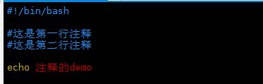

shell脚本的第一行必须以#!/bin/bash开头
shell脚本的注释
shell脚本的单行注释以#来注释

shell脚本的多行注释以:>>!注释的内容!来注释
shell脚本的执行方式有以下两种：
第一种（推荐）：赋予.sh文件有可执行权限（即+x操作），然后以./你要执行的sh脚本的方式执行
第二种：以sh 你要执行的sh脚本的方式执行
shell中变量分为两种：系统变量和用户自定义变量
系统变量：如JAVA_HOME、PATH等
用户自定义变量：用户必须先定义好才能使用
变量在定义好之后要在变量名前面加$才能使用
列出当前shell中所有的变量：set命令
shell中的用户自定义变量
shell中用户自定义变量是通过：变量名=变量值，如A=123这种方式去定义，一定要注意等号左右两边不能有空格
shell中变量的类型默认就是字符串，所以在变量定义的时候可以省略双引号，但是如果变量值是有空格在里面的，必须要用双引号来括起来
shell中变量的引用通过$变量名来进行引用
将命令的返回值赋给变量（特别常用）
第一种方式：将命令的返回值赋给变量是通过反引号来实现的
如：VAR=`ls -al`，就是将ls -al的命令的结果赋给变量VAR
第二种方式：$(命令)
shell中变量的命名规范
变量名称可以由字母、数字、下划线组成，但是不能以数字开头
变量名称一般习惯为大写
位置参数变量
$n，功能描述：n为数字，$0表示命令本身，$1-$9代表第一到第九个参数，十以上的参数需要用大括号括起来，如${10}
$*，功能描述：这个变量代表命令行中所有的参数，$*把所有的参数看成一个整体
$@，功能描述：这个变量也代表命令行中所有的参数，不过$@把每个参数区分对待
$#，功能描述：这个变量代表命令行中所有参数的个数
预定义变量：就是shell设计者事先已经定义好的变量，可以在shell脚本中
$$ 功能描述：当前进程的进程号PID
$! 功能描述：后台运行的最后一个进程的进程号PID
$? 功能描述：最后一次执行的命令的返回状态，如果这个变量的值为0，证明上一个命令正确执行，如果这个变量的值为非0（具体是哪个数，由命令自己来决定），则证明上一个命令不正确执行了
shell中的运算符
第一种方式：可以通过expr m + n这种方式进行运算，一定要注意，运算符间要有空格
第二种方式：可以通过$[运算表达式]这种方式进行运算，这种方式就不强制要求要有空格了
加(+)、减(-)、乘(\*)、除(/)、取余(%)
shell中的条件判断
基本语法：[ 条件表达式 ]，一定要注意条件表达式前后要有空格
shell中流程控制之分支控制
shell中流程控制之循环控制
shell中如何读取控制台输入
shell中的自定义函数